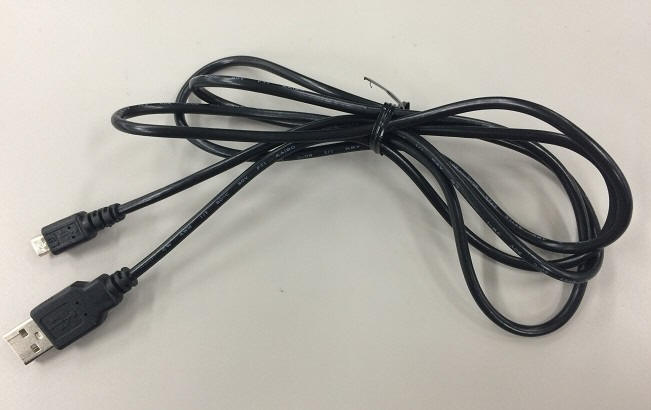
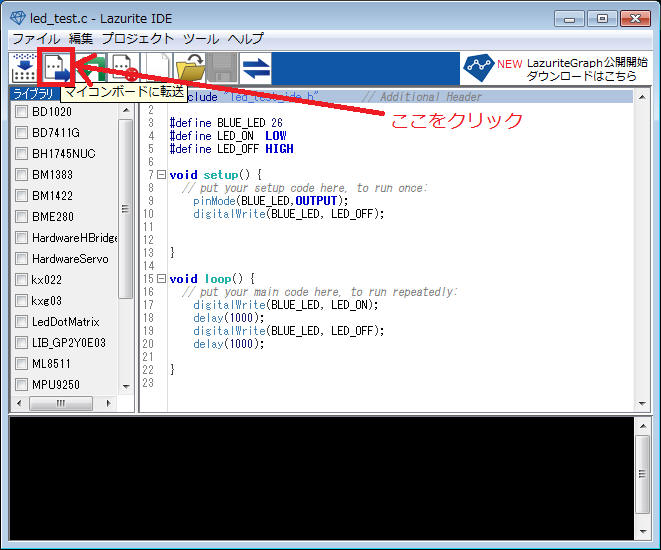

ここでは、LEDを1秒間隔でON/OFFをするプログラムを作成しながら、
Lazurite IDEの使用方法を説明しています。
Lazurite IDEはマイコンボード（Lazurite Basic、Lazurite SubGHz）のための開発環境です。
Lazurite Sub-GHzとUSBケーブルを用意して下さい。

既に作成済みのファイルがある場合は、ファイルが表示されます。
ここではファイル名をled_testとして「新規作成」をクリックしてください。
次のようにテンプレートが挿入されます。
完成したコードは次の通りです。
接続すると、Lazurite Sub-GHzの電源がはいります。

※「Lazurite Sub-GHz」は、920MHzによる送信／受信をするためのオプションで「Lazurite Basic」はそれを含まないオプションです。
今回はLEDのON/OFFのみなので、「Lazurite Basic」を選択してください。
エラーが出た場合は、解析が必要です。

コンソール画面にテキストメッセージが流れ、test_led.cのプログラムを16bitローパワーマイコン（ML620Q504）が読める
プログラムに変換（コンパイル）されます。
ML620Q504は、マイコンボードに搭載されているラピスセミコンダクタオリジナルの汎用16bitローパワーマイコンです。
正常にコンパイルが完了すると
convert success
boot mode
start upload...
というメッセージが表示されます。

メッセージが表示されると、マイコンボードのオレンジ色のLEDが点灯します。
この状態は、マイコンボードがプログラムを受信するモードに入ったことを示しています。
続いて、ML620Q504が内蔵しているFlashメモリにPCから送信されたプログラムが書き込まれます。
書き込み中は青色LEDが点滅します。
書き込みが完了すると、オレンジ色のLEDが消灯し、青色LEDが1秒間隔で点滅します。

点滅すれば、作成したプログラムが正常にマイコンボードで動作しています。
これでLEDを1秒間隔でON/OFFをするプログラムを作成できました。